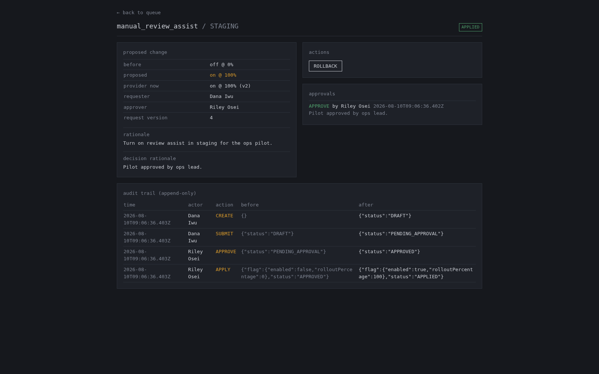

screen share // devin build lifecycle, 2:30
The proof is the build lifecycle, so I’ll show the work now.


Agentic development lifecycle
Brief -> Scope -> Build -> Test -> QA -> Pull Request -> AI-powered PR review -> Address -> Re-test -> Re-review -> CI green or keep fixing -> Human review -> Merge -> Deploy [skipped in this demo]
What you just saw on screen: the working queue and audit trail. Next: the lifecycle that produced them, live in Devin.
1 / 7